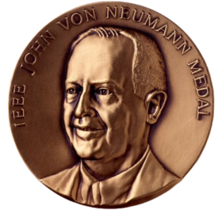
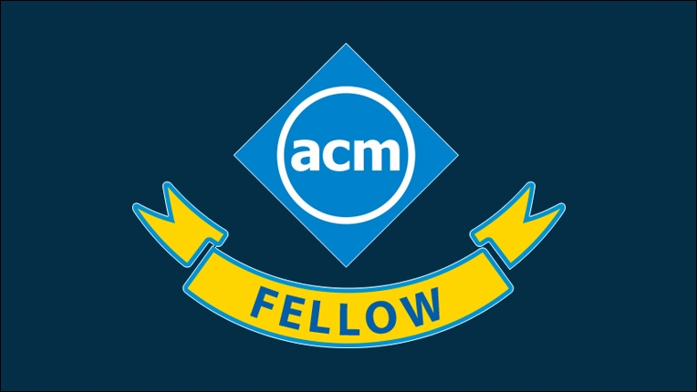
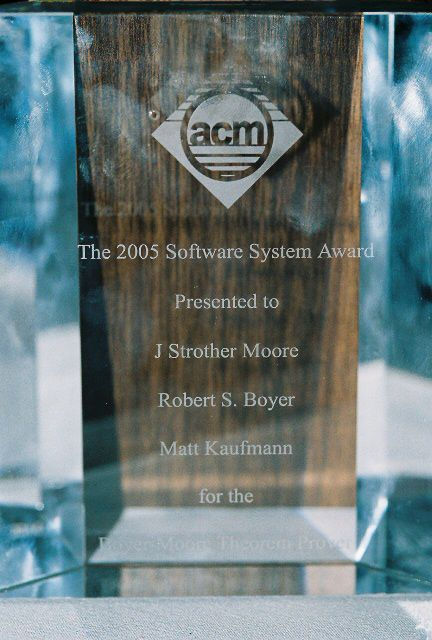
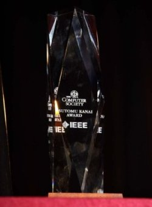

Награды
Награды:
- Медаль Джона фон Неймана
- Действительный член ACM
- ACM Software System
- Tsutomu Kanai Award
| Название | Что-то | Что-то | Что-то |
|---|---|---|---|
| хи | хи | хи | |
| хи | хи | хи | |
| хи | хи | хи | |
| хи | хи | хи |
Медаль Джона фон Неймана — награда в области информационных технологий, учреждённая советом директоров IEEE в 1990 году. Вручается ежегодно с 1992 года за выдающиеся теоретические, технологические и деловые достижения. Учитываются не только новые достижения, но значительные результаты прошлых лет. Существует предположение что ему её так и не выдали.

Действительный член ACM — почётное звание (фелло), пожизненно присуждаемое выдающимся членам Ассоциации вычислительной техники (ACM). Не более 1 % членов ACM могут быть избраны в качестве действительных членов.

ACM Software System - присуждается учреждению или физическому лицу, получившему признание за разработку системы программного обеспечения, оказавшей длительное влияние, отраженное в вкладе в концепции, коммерческом принятии или в том и другом.

Tsutomu Kanai Award - может быть вручена ежегодно по рекомендации подкомитета премии Канаи, одобрению Комитета по наградам и утверждению Совета управляющих. Премия Канаи присуждается за значительный вклад в современные распределенные вычислительные системы и их приложения.
